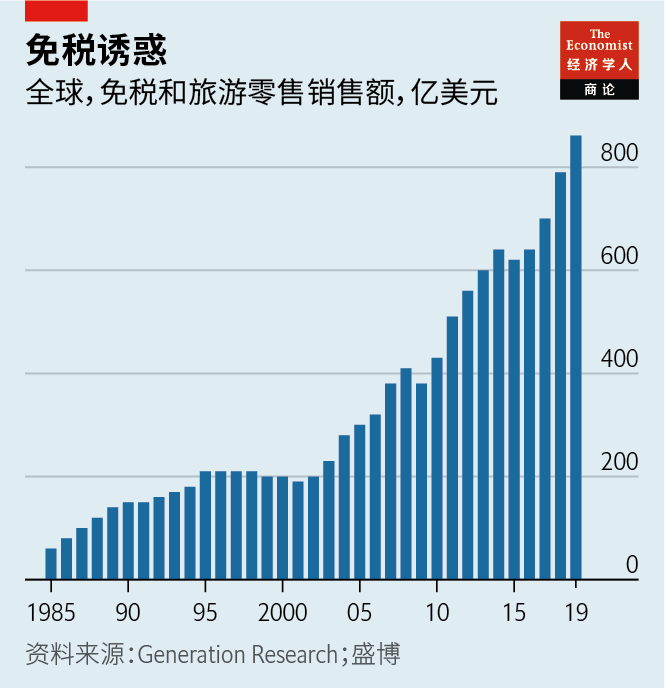
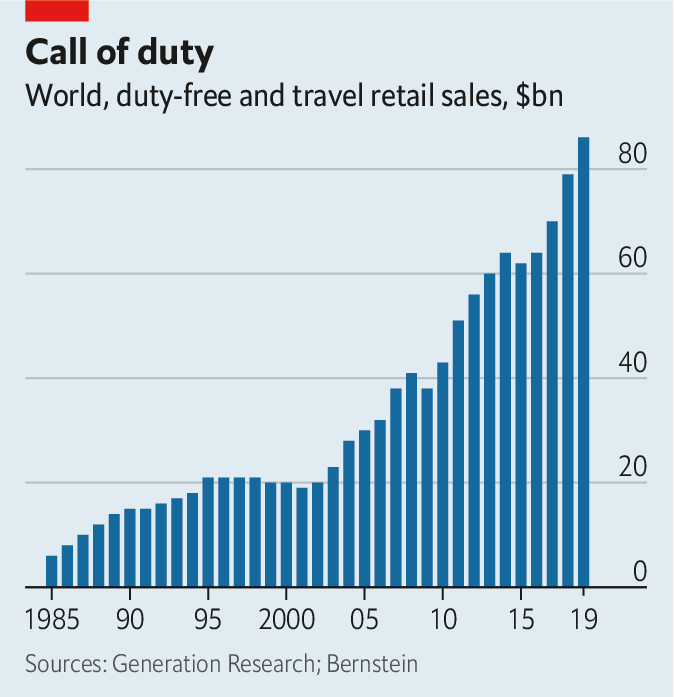

2021-03-15T14:15:27+00:00
免税零售
大陆漂移
疫情令旅游购物陷入停滞。行业正在探索新的成长路径
海南岛是香港西南向450公里处的一个热带岛屿，曾经是个清冷偏僻之地，到处是经济型度假村，满足那些没钱去夏威夷度假的中国游客的需求。如今，它吸引到的游客阔绰了许多。在这里的其中一个大型豪华购物中心买一件古驰礼服或蒂芙尼首饰，就如同身在纽约的第五大道或巴黎的蒙田大道——直到结账时才回过神来。大陆游客不能把买下的一袋袋华服珠宝拎出店，而要到回家时在机场提货，或者等它们被直接邮寄到家。根据10年前出台的规定，海南从中国的关税体制中划分了出来，这些商品免除了某些税收和关税。省下的金额可多达30%。
一提到免税购物，就不免让人想到人头攒动的机场航站楼。新冠疫情让全球各地的机场门可罗雀，机场免税店也随之受到重创。咨询公司Generation Research的数据显示，免税销售额在2019年达到860亿美元，而去年骤减了三分之二。另一家咨询公司贝恩的毛罗·阿纳斯塔西（Mauro Anastasi）预测，按实值计算，旅游零售额在2025年之前都无法回升到之前的水平。洲际旅客和商务旅客是消费力最强的群体，而他们很可能是最后一批恢复搭飞机出行的人。中国游客最受免税运营商看重，他们对防疫不力的国家可是敬而远之。
总有一天购物者会重返机场。然而，在走出这次危机之后，免税购物会变得大不一样：毫不掩饰地专注于奢侈品，与旅行的关联减少，更加贴近亚洲的豪客。海南就指明了这一方向。
疫情爆发前，向游客销售商品是实体零售业为数不多的亮点之一。自从邮轮开始在公海上向乘客兜售免税烟酒以来，这种操作大行其道。1950年，爱尔兰将它运用到了航空领域。随着大众旅游的兴起，世界各地的机场都变身成为带有登机口的免税购物商场。在疫情前的几年里，这部分的年增速达到8%左右，是其他类型商店的两倍，主要受到干邑白兰地、太阳镜、手袋和其他小饰物的销售推动。自1980年代末以来销售额已经增长了七倍。兴奋不已的商家直呼免税店已成为“第六大陆”。
疫情给他们当头浇下了一盆冷水。和在其他许多领域一样，一些原本就在发生着的重塑免税业的趋势得以加速。首先是销售的免税品类。酒类，尤其是香烟，多年来日渐萎缩。奢华品牌成为了机场大厅的主流品类，因为它们意识到这里特别适合向富人尤其是亚洲乘客推销。奢侈品、香水和化妆品现在主导了旅游零售，贡献了销售额的三分之二。
退税运动
第二个趋势是从机场转移。尽管航站楼仍然是天然之选，但免税购物近年已经扩展到更远的地带。在新冠病毒席卷全球之前，机场乘客的人均花费就已经开始下降。
与此同时，开在热门旅游地市中心的专营店也吸引到了符合退税资格的游客，只要他们把购买的商品带回本国即可。这些免税店在亚洲尤其受欢迎，现在已经占到全部销售额的近四成。全球各地的规定各不相同，但有些店甚至只要你跟旅行搭一点边就可以购买——比如预订了几个月后的机票。
免税店在中国大陆如雨后春笋般涌现，以迎合从海外归来的（以及很快又会有计划去海外旅游的）国内游客。例如，海南的免税额度最近提高了三倍，中国消费者如今在那里可享受到10万元的免税购物额度。
最后一个趋势就是免税零售的“大陆”向东漂移，这一点同样在海南得到体现。2011年，亚太超过欧洲成为最大的区域市场。（美国大部分是国内航班，因此一直都落在后面。）疫情爆发前，距离北京两小时航程的首尔仁川机场成为世界最大的机场商店。2020年普拉达和爱马仕在亚洲（不包括日本）的收入飙升超过40%，原因之一就是在海南的热卖。据报道，去年海南的免税店销售总额达到50亿美元，比2019年翻了一倍多。有预测认为未来十年还可能增长四倍。
尽管多年来中国人一直是全球最大的奢侈品买家，贡献了全球销售额的三分之一，但各大品牌并不愿意将海南等地作为顶级奢侈品销售地。中国人在手袋、腕表和其他奢侈品上的消费有三分之二是在境外发生的。
中国共产党想要改变这一点。旅游零售行业简报《穆迪戴维特报告》（Moodie Davitt Report）的马丁·穆迪（Martin Moodie）表示，不断加大对富裕人口的减税力度是“实现政府一项长期使命的要义，目的是最大程度地扩大国内消费，让旅游购物从境外回流境内”。咨询公司麦肯锡的泽沛达（Daniel Zipser）预计，奢侈品消费的海外份额将会下跌。经纪公司盛博的彻丽·梁（Cherry Leung，音译）表示，由于这些新的进展，奢侈品集团对海南这类地点的态度“发生了巨大变化”。
如果中国人继续在国内购买奢侈品，就会让那些长久以来统霸了海外机场的免税运营商流失更多生意。这些公司包括瑞士杜福睿（Dufry）和奢侈品帝国路威酩轩（LVMH）旗下的DFS。去年，国有控股的中免集团赶超了杜福睿，成为全球最大的免税奢侈品零售商。过去一年，中免集团在上海上市的子公司的市值增长了两倍多，达到1120亿美元，跻身全球市值最高的零售商之列。
一些欧洲的旅游零售商已经意识到消费力格局的转变，正在努力挤进海南市场。杜福睿向阿里巴巴出售了部分股份，希望这家中国电子商务巨头能够帮助它改善在海南的业务。1月，法国一家企业集团旗下的拉加代尔旅行零售（Lagardère Travel Retail）在海南开设了第二家店。
机场仍会是找到富裕购物者的好地方。等待航班时百无聊赖的旅客是奢侈品牌的完美目标。杜福睿的老板朱利安·迪亚兹·冈萨雷斯（Julián Díaz González）指出，多数零售商都花费重金吸引顾客光顾他们的商店或网站，“而我们只需要把他们从机场大厅的走廊请到店里。”随着免税行业不断演变，迪亚兹可能会越来越意识到，他的免税店得跟着顾客跑了。
2021-03-15T14:15:27+00:00
Duty-free retail
Continental drift
The pandemic has landed travel shopping in limbo. The industry is finding new ways to grow
HAINAN, A TROPICAL island 450km (280 miles) south-west of Hong Kong, used to be a sleepy backwater populated by budget resorts catering to Chinese tourists unable to afford a trip to Hawaii. Today it draws travellers with considerably fatter wallets. Buying a Gucci gown or a Tiffany trinket in one of its giant, posh malls feels no different from shopping on Fifth Avenue in New York or Avenue Montaigne in Paris—until the tills are rung. Instead of walking out with their bling, visitors from mainland China pick up their items at the airport on their way home, or get them dispatched there directly. Under rules devised a decade ago, which mean that for duty purposes Hainan is treated as a separate zone from mainland China, they are exempt from certain taxes and duties. Savings can reach 30% as a result.
Duty-free shopping conjures up images of crowded airport terminals. As covid-19 has emptied these of passengers around the world, the shops inside have suffered commensurately. After reaching $86bn in 2019, according to Generation Research, a consultancy, duty-free sales collapsed by two-thirds last year. Mauro Anastasi of Bain, another consultancy, forecasts that travel-retail sales will not reach those levels again in real terms before the second half of the decade. Intercontinental passengers and business travellers, the biggest spenders, are likely to take longest to return to the skies. Chinese tourists, by far the most prized by duty-free operators, are shunning countries with poor records of handling the pandemic.
Shoppers will one day return to airports. Yet when it emerges from the current crisis, duty-free shopping will have been transformed: unabashedly focused on luxury, less connected to travel and closer to Asian high-rollers. Hainan points the way.
Before covid-19, selling stuff to travellers had been one of the few bright spots in the brick-and-mortar retail world. The practice has been popular ever since cruise ships on the high seas plied their passengers with booze and cigarettes free of government levies. In 1950 Ireland applied the principle to aviation. As mass tourism took hold, airports the world over turned themselves into tax-free shopping malls with departure gates. Annual growth of around 8% in recent pre-pandemic years—twice the figure for other shops—was fuelled by sales of cognac, sunglasses, handbags and other knick-knacks. Sales have grown eight-fold since the late 1980s. Excited marketers referred to duty-free shops as “the sixth continent”.
Covid-19 has deflated that enthusiasm. It has also, as in many other areas, accelerated pre-existing trends that were reshaping the duty-free business. The first has to do with the mix of stuff sold in duty-free. Alcohol and, particularly, cigarettes have dwindled over the years. Posh brands became mainstays of airport concourses as they realised that these were good places to pitch to wealthy people, particularly Asian passengers. Luxury goods, perfumes and cosmetics now dominate travel retail, accounting for two-thirds of sales.
Rebate tectonics
The second development is the shift away from airports. Although the terminal remains its natural habitat, duty-free shopping has in recent years expanded farther afield. Spending per passenger in airports was sagging even before the coronavirus swept the globe.
At the same time, specialised downtown shops in tourist hotspots have lured visitors eligible for tax discounts if they repatriate what they buy. These outlets, particularly popular in Asia, now represent nearly 40% of all sales. Rules vary globally, but some allow shopping even by those with a tenuous link to travel, for example a ticket booked for several months hence.
Tax-exempt outlets are popping up across mainland China, catering to domestic travellers who have returned from overseas (and, soon, who plan to travel there in future). Chinese shoppers in Hainan, for example, now enjoy a duty-free allowance of 100,000 yuan ($15,500), thanks to a recent tripling of the tax break.
The final trend, also on display in Hainan, is duty-free’s eastward drift. In 2011 Asia-Pacific overtook Europe as the largest regional market. (America, where most flights are domestic, has always been a laggard.) Before the pandemic Seoul’s Incheon, a two-hour flight from Beijing, became the biggest airport shop in the world. Revenues for Prada and Hermès in Asia excluding Japan have jumped by over 40% in 2020, owing partly to splurges in Hainan. Industry sales there are reported to have reached $5bn last year, more than doubling from 2019. Some predict they could grow five-fold within a decade.
Although the Chinese have been the world’s biggest luxury buyers for years, accounting for a third of global sales, brands were reluctant to consider places like Hainan as top-tier luxury venues. Two-thirds of Chinese spending on handbags, watches and other fripperies took place overseas.
The Communist Party wants to change that. The ever-more-generous tax breaks for the well-heeled are “the key tenet of a long-term government mission to maximise domestic consumption and repatriate travel-related shopping from abroad”, says Martin Moodie of the
If the Chinese continue to buy their baubles at home, that will suck more business away from the duty-free operators that have historically dominated non-Chinese airports. These include Dufry of Switzerland and DFS, part of the LVMH luxury empire. Last year China Duty Free, a state-controlled group, overtook Dufry as the world’s largest purveyor of tariff-free luxury goods. The market capitalisation of China Duty Free’s Shanghai-listed arm has more than tripled over the past year to $112bn, making it one of the most valuable retailers in the world.
In an acknowledgment of the shifting balance of spending power, some travel retailers from Europe are trying to muscle in on Hainan. Dufry has sold a stake to Alibaba, hoping that China’s e-commerce giant can improve its fortunes there. In January Lagardère Travel Retail, part of a French conglomerate, launched a second shop on the island.
Airports will remain good places to find well-off shoppers. Bored people waiting for their flights to be called are perfect marks for luxury brands. Most retailers spend fortunes attracting customers to their shops or websites, points out Julián Díaz González, boss of Dufry. “For us it is just moving them from the corridor to the shops.” As the industry continues to evolve, Mr Díaz may increasingly find it is a matter of moving the duty-free shops to the customers. ■
2021-03-15T14:15:27+00:00
免稅零售
大陸漂移
疫情令旅遊購物陷入停滯。行業正在探索新的成長路徑
海南島是香港西南向450公里處的一個熱帶島嶼，曾經是個清冷偏僻之地，到處是經濟型度假村，滿足那些沒錢去夏威夷度假的中國遊客的需求。如今，它吸引到的遊客闊綽了許多。在這裡的其中一個大型豪華購物中心買一件古馳禮服或蒂芙尼首飾，就如同身在紐約的第五大道或巴黎的蒙田大道——直到結賬時才回過神來。大陸遊客不能把買下的一袋袋華服珠寶拎出店，而要到回家時在機場提貨，或者等它們被直接郵寄到家。根據10年前出台的規定，海南從中國的關稅體制中劃分了出來，這些商品免除了某些稅收和關稅。省下的金額可多達30%。
一提到免稅購物，就不免讓人想到人頭攢動的機場航站樓。新冠疫情讓全球各地的機場門可羅雀，機場免稅店也隨之受到重創。諮詢公司Generation Research的數據顯示，免稅銷售額在2019年達到860億美元，而去年驟減了三分之二。另一家諮詢公司貝恩的毛羅·阿納斯塔西（Mauro Anastasi）預測，按實值計算，旅遊零售額在2025年之前都無法回升到之前的水平。洲際旅客和商務旅客是消費力最強的群體，而他們很可能是最後一批恢復搭飛機出行的人。中國遊客最受免稅運營商看重，他們對防疫不力的國家可是敬而遠之。
總有一天購物者會重返機場。然而，在走出這次危機之後，免稅購物會變得大不一樣：毫不掩飾地專註於奢侈品，與旅行的關聯減少，更加貼近亞洲的豪客。海南就指明了這一方向。
疫情爆發前，向遊客銷售商品是實體零售業為數不多的亮點之一。自從郵輪開始在公海上向乘客兜售免稅煙酒以來，這種操作大行其道。1950年，愛爾蘭將它運用到了航空領域。隨着大眾旅遊的興起，世界各地的機場都變身成為帶有登機口的免稅購物商場。在疫情前的幾年裡，這部分的年增速達到8%左右，是其他類型商店的兩倍，主要受到干邑白蘭地、太陽鏡、手袋和其他小飾物的銷售推動。自1980年代末以來銷售額已經增長了七倍。興奮不已的商家直呼免稅店已成為“第六大陸”。
疫情給他們當頭澆下了一盆冷水。和在其他許多領域一樣，一些原本就在發生着的重塑免稅業的趨勢得以加速。首先是銷售的免稅品類。酒類，尤其是香煙，多年來日漸萎縮。奢華品牌成為了機場大廳的主流品類，因為它們意識到這裡特別適合向富人尤其是亞洲乘客推銷。奢侈品、香水和化妝品現在主導了旅遊零售，貢獻了銷售額的三分之二。
退稅運動
第二個趨勢是從機場轉移。儘管航站樓仍然是天然之選，但免稅購物近年已經擴展到更遠的地帶。在新冠病毒席捲全球之前，機場乘客的人均花費就已經開始下降。
與此同時，開在熱門旅遊地市中心的專營店也吸引到了符合退稅資格的遊客，只要他們把購買的商品帶回本國即可。這些免稅店在亞洲尤其受歡迎，現在已經佔到全部銷售額的近四成。全球各地的規定各不相同，但有些店甚至只要你跟旅行搭一點邊就可以購買——比如預訂了幾個月後的機票。
免稅店在中國大陸如雨後春筍般湧現，以迎合從海外歸來的（以及很快又會有計劃去海外旅遊的）國內遊客。例如，海南的免稅額度最近提高了三倍，中國消費者如今在那裡可享受到10萬元的免稅購物額度。
最後一個趨勢就是免稅零售的“大陸”向東漂移，這一點同樣在海南得到體現。2011年，亞太超過歐洲成為最大的區域市場。（美國大部分是國內航班，因此一直都落在後面。）疫情爆發前，距離北京兩小時航程的首爾仁川機場成為世界最大的機場商店。2020年普拉達和愛馬仕在亞洲（不包括日本）的收入飆升超過40%，原因之一就是在海南的熱賣。據報道，去年海南的免稅店銷售總額達到50億美元，比2019年翻了一倍多。有預測認為未來十年還可能增長四倍。
儘管多年來中國人一直是全球最大的奢侈品買家，貢獻了全球銷售額的三分之一，但各大品牌並不願意將海南等地作為頂級奢侈品銷售地。中國人在手袋、腕錶和其他奢侈品上的消費有三分之二是在境外發生的。
中國共產黨想要改變這一點。旅遊零售行業簡報《穆迪戴維特報告》（Moodie Davitt Report）的馬丁·穆迪（Martin Moodie）表示，不斷加大對富裕人口的減稅力度是“實現政府一項長期使命的要義，目的是最大程度地擴大國內消費，讓旅遊購物從境外迴流境內”。諮詢公司麥肯錫的澤沛達（Daniel Zipser）預計，奢侈品消費的海外份額將會下跌。經紀公司盛博的徹麗·梁（Cherry Leung，音譯）表示，由於這些新的進展，奢侈品集團對海南這類地點的態度“發生了巨大變化”。
如果中國人繼續在國內購買奢侈品，就會讓那些長久以來統霸了海外機場的免稅運營商流失更多生意。這些公司包括瑞士杜福睿（Dufry）和奢侈品帝國路威酩軒（LVMH）旗下的DFS。去年，國有控股的中免集團趕超了杜福睿，成為全球最大的免稅奢侈品零售商。過去一年，中免集團在上海上市的子公司的市值增長了兩倍多，達到1120億美元，躋身全球市值最高的零售商之列。
一些歐洲的旅遊零售商已經意識到消費力格局的轉變，正在努力擠進海南市場。杜福睿向阿里巴巴出售了部分股份，希望這家中國電子商務巨頭能夠幫助它改善在海南的業務。1月，法國一家企業集團旗下的拉加代爾旅行零售（Lagardère Travel Retail）在海南開設了第二家店。
機場仍會是找到富裕購物者的好地方。等待航班時百無聊賴的旅客是奢侈品牌的完美目標。杜福睿的老闆朱利安·迪亞茲·岡薩雷斯（Julián Díaz González）指出，多數零售商都花費重金吸引顧客光顧他們的商店或網站，“而我們只需要把他們從機場大廳的走廊請到店裡。”隨着免稅行業不斷演變，迪亞茲可能會越來越意識到，他的免稅店得跟着顧客跑了。